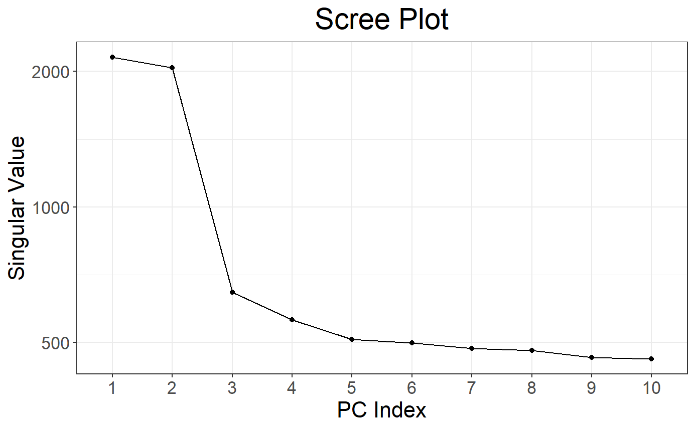
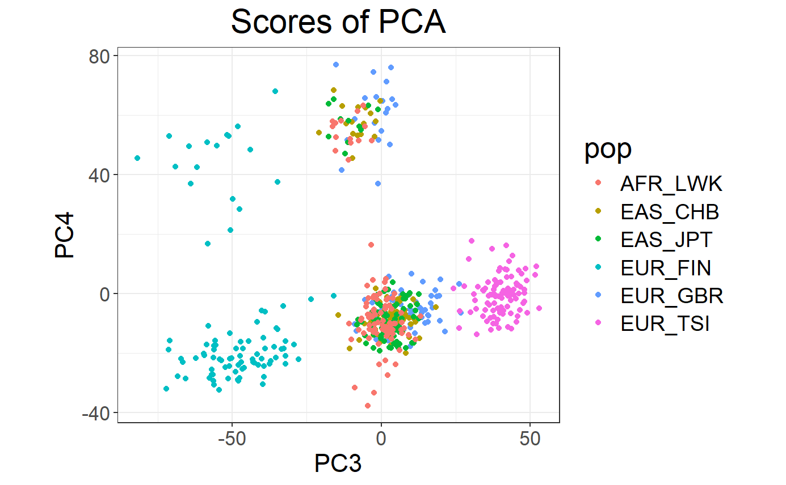
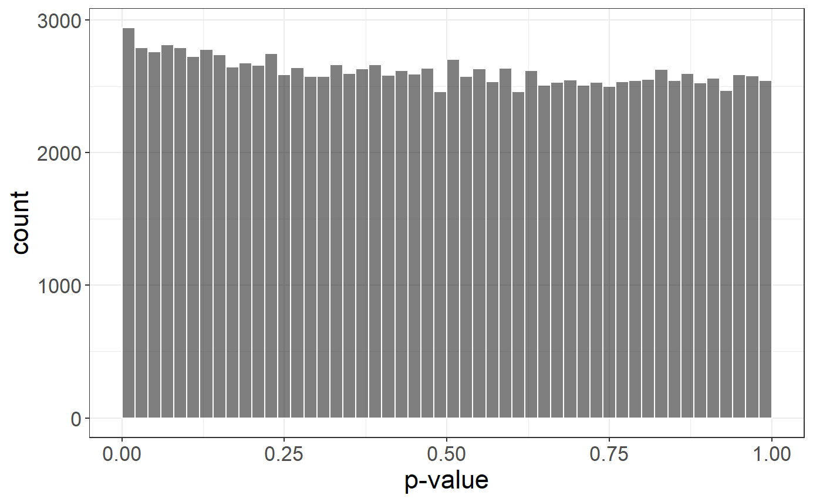
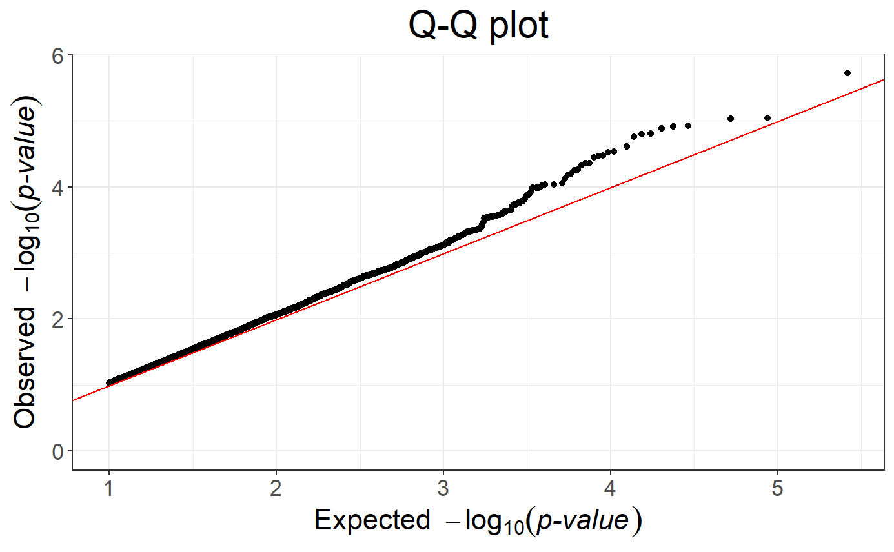
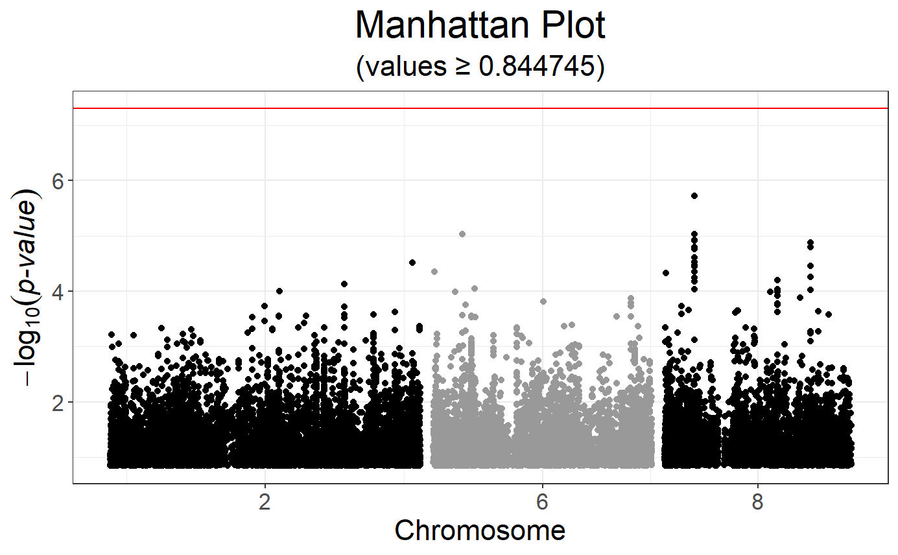
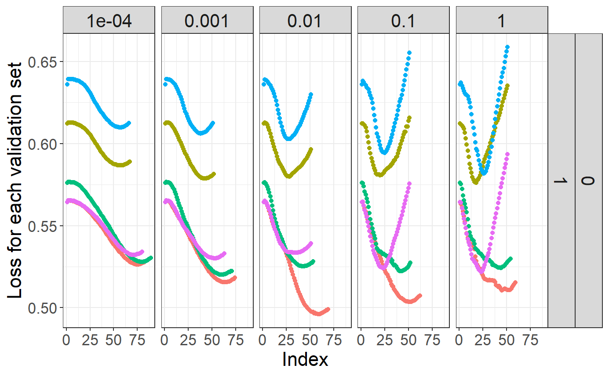

Exercises using packages bigsnpr and bigstatsr
Florian Privé
April 18, 2019
Source:vignettes/exo.Rmd
exo.RmdIn this document, I show how to use some of the features of packages {bigsnpr} and {bigstatsr}. Note that many functions used here come from package {bigstatsr} and could therefore be used on other data encoded as matrix-like (outside of the field of genotype data).
Get data
Download data and unzip files. I store those files in a directory called "tmp-data" here.
You can see there how I generated these data from the 1000 Genomes project.
Read from the PLINK files
# Load packages bigsnpr and bigstatsr library(bigsnpr)
## Loading required package: bigstatsr# Read from bed/bim/fam, it will create new files. snp_readBed("tmp-data/public-data.bed")
## [1] "C:\\Users\\au639593\\Desktop\\bigsnpr\\tmp-data\\public-data.rds"# Attach the "bigSNP" object in R session obj.bigSNP <- snp_attach("tmp-data/public-data.rds") # See how it looks like str(obj.bigSNP, max.level = 2, strict.width = "cut")
## List of 3
## $ genotypes:Reference class 'FBM.code256' [package "bigstatsr"] with 15 ..
## ..and 26 methods, of which 12 are possibly relevant:
## .. add_columns, as.FBM, bm, bm.desc, check_dimensions,
## .. check_write_permissions, copy#envRefClass, initialize,
## .. initialize#FBM, save, show#envRefClass, show#FBM
## $ fam :'data.frame': 559 obs. of 6 variables:
## ..$ family.ID : chr [1:559] "EUR_GBR" "EUR_GBR" "EUR_GBR" "EUR_GBR" ...
## ..$ sample.ID : chr [1:559] "HG00096" "HG00097" "HG00099" "HG00100" ...
## ..$ paternal.ID: int [1:559] 0 0 0 0 0 0 0 0 0 0 ...
## ..$ maternal.ID: int [1:559] 0 0 0 0 0 0 0 0 0 0 ...
## ..$ sex : int [1:559] 1 2 2 2 1 2 1 2 2 1 ...
## ..$ affection : int [1:559] 1 2 1 1 1 1 2 1 2 1 ...
## $ map :'data.frame': 130816 obs. of 6 variables:
## ..$ chromosome : int [1:130816] 2 2 2 2 2 2 2 2 2 2 ...
## ..$ marker.ID : chr [1:130816] "rs13400442" "rs7594567" "rs7597758" "..
## ..$ genetic.dist: int [1:130816] 0 0 0 0 0 0 0 0 0 0 ...
## ..$ physical.pos: int [1:130816] 18506 21833 22398 28228 32003 32005 36..
## ..$ allele1 : chr [1:130816] "C" "G" "T" "A" ...
## ..$ allele2 : chr [1:130816] "T" "C" "C" "G" ...
## - attr(*, "class")= chr "bigSNP"# Get aliases for useful slots G <- obj.bigSNP$genotypes CHR <- obj.bigSNP$map$chromosome POS <- obj.bigSNP$map$physical.pos y <- obj.bigSNP$fam$affection - 1 sex <- obj.bigSNP$fam$sex pop <- obj.bigSNP$fam$family.ID NCORES <- nb_cores() # Check some counts for the 10 first SNPs big_counts(G, ind.col = 1:10)
## [,1] [,2] [,3] [,4] [,5] [,6] [,7] [,8] [,9] [,10]
## 0 504 468 421 483 476 420 380 383 478 389
## 1 48 69 107 66 73 124 136 135 70 133
## 2 7 22 31 10 10 15 43 41 11 37
## <NA> 0 0 0 0 0 0 0 0 0 0What you must do
You need to
Explore the data
Assess population structure of the data
Find the variables associated with the disease status (
y)-
Predict the disease status using the following indices as training/test sets:
For this, you can use whatever tools you want because the data is quite small. In the following section, I give some (scalable) solutions using using packages {bigstatsr} and {bigsnpr}.
Solution using {bigstatsr} and {bigsnpr}
Population structure: Principal Component Analysis
Let us compute first principal components of the scaled genotype matrix:
# Compute partial SVD (10 PCs by default) using random projections # big_scale() computes means and standard deviations for scaling svd <- big_randomSVD(G, big_scale(), ncores = NCORES)
# Scree plot plot(svd)

library(ggplot2)
## Warning: package 'ggplot2' was built under R version 3.6.3

# Loadings (effects of each variable for each PC) plot(svd, type = "loadings", loadings = 1:10, coeff = 0.4)
Looking at the loadings, we can see that the PCA captures some variation due to large correlation between variables. To learn more about this possible pitfall, please look at this vignette.
Association: Genome-Wide Association Study (GWAS)
# Association of each variable of `G` with `y` (adjusting for 10 PCs) gwas <- big_univLogReg(G, y, covar.train = svd$u, ncores = NCORES) # Histogram of p-values plot(gwas)

## Warning: Removed 117734 rows containing missing values (geom_point).
# Manhattan plot snp_manhattan(gwas, CHR, POS, npoints = 20e3) + geom_hline(yintercept = -log10(5e-8), color = "red")

Polygenic Risk Score (PRS)
with Clumping and Thresholding (C+T)
\[\rm{PRS}_i = \sum_{\substack{j \in S_\text{clumping} \\ p_j~<~p_T}} \hat\beta_j \cdot G_{i,j}~,\]
where \(\hat\beta_j\) (\(p_j\)) are the effect sizes (p-values) estimated from the GWAS and \(G_{i,j}\) is the allele count (genotype) for individual \(i\) and SNP \(j\).
sumstats <- bigreadr::fread2("tmp-data/public-data-sumstats.txt") lpval <- -log10(sumstats$p) ind.keep <- snp_clumping(G, CHR, ind.row = ind.train, S = lpval, infos.pos = POS, ncores = 3) THR <- seq_log(1, 8, length.out = 20) prs <- snp_PRS(G, sumstats$beta[ind.keep], ind.keep = ind.keep, lpS.keep = lpval[ind.keep], thr.list = THR) # Learn the optimal threshold on the training set aucs <- apply(prs[ind.train, ], 2, AUC, target = y[ind.train]) plot(THR, aucs, xlab = "-log10(p-value)", ylab = "AUC", pch = 20)

# Evaluate on the test set AUC(prs[ind.test, which.max(aucs)], y[ind.test])
## [1] 0.6689111(TODO: ADD SCT)
with Penalized Logistic Regression (PLR)
\[\arg\!\min_{\beta_0,~\beta}(\lambda, \alpha)\left\{ \underbrace{ -\sum_{i=1}^n \left( y_i \log\left(p_i\right) + (1 - y_i) \log\left(1 - p_i\right) \right) }_\text{Loss function} + \underbrace{ \lambda \left((1-\alpha)\frac{1}{2}\|\beta\|_2^2 + \alpha \|\beta\|_1\right) }_\text{Penalization} \right\}\]
where
\(p_i=1/\left(1+\exp\left(-(\beta_0 + x_i^T\beta)\right)\right)\)
\(x\) is denoting the genotypes and covariables (e.g. principal components),
\(y\) is the disease status we want to predict,
\(\lambda\) is a regularization parameter that needs to be determined and
\(\alpha\) determines relative parts of the regularization \(0 \le \alpha \le 1\).
If you want to learn more about our implementation of PLR, please look at this paper.
# Penalized logistic regression for many alphas and lambdas mod <- big_spLogReg(G, y[ind.train], ind.train, covar.train = svd$u[ind.train, ], K = 5, alphas = 10^(-(0:4)), ncores = NCORES)
# Plot regularization paths (from high lambda to low lambda) # for each validation set (color) and each alpha (facet) plot(mod)

# Get summaries of models summary(mod)
## # A tibble: 5 x 7
## alpha validation_loss intercept beta nb_var message all_conv
## <dbl> <dbl> <dbl> <list> <int> <list> <lgl>
## 1 0.0001 0.557 -1.41 <dbl [130,826]> 67876 <chr [5~ TRUE
## 2 0.001 0.550 -1.94 <dbl [130,826]> 16008 <chr [5~ TRUE
## 3 0.01 0.547 -2.16 <dbl [130,826]> 2928 <chr [5~ TRUE
## 4 0.1 0.545 -2.30 <dbl [130,826]> 722 <chr [5~ TRUE
## 5 1 0.543 -2.40 <dbl [130,826]> 398 <chr [5~ TRUE# Get the predictions for the test set pred <- predict(mod, G, ind.test, covar.row = svd$u[ind.test, ]) # Assess the Area Under the ROC Curve AUC(pred, y[ind.test])
## [1] 0.7148903